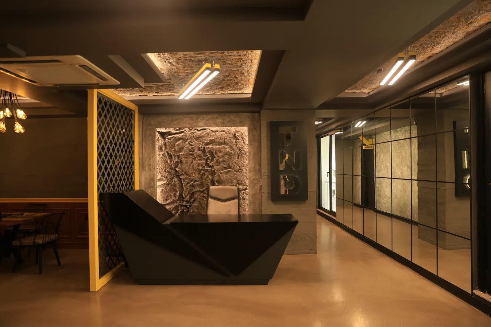

THE SHOWROOM
Follow the sign.
Explore the work.
A space where fabrics, product ideas and finished garments can be seen together.
TANDOĞDU TEKSTİLFABRIC · DEVELOPMENT · PRODUCTION
WELCOME IN
From a direction sign to a room full of ideas.
The showroom makes the production story tangible. It is where we can look closely at garments, discuss details and imagine what comes next.

THE SPACESee the product
See the product
in its element.
Finished pieces tell the story of fabric, print, construction and finishing better than words alone.
OUR OWN BRAND
A brand shaped by making.
In the showroom, Murat Tandoğdu talks about the company’s own brand and the thinking behind the pieces on display.
MURAT TANDOĞDU · OUR BRANDINSIDE THE SPACE
A closer look.
The setting brings product conversations into focus.




LET'S MAKE IT REAL
Come with an idea.
We can begin with a single reference and explore how it could become a collection.